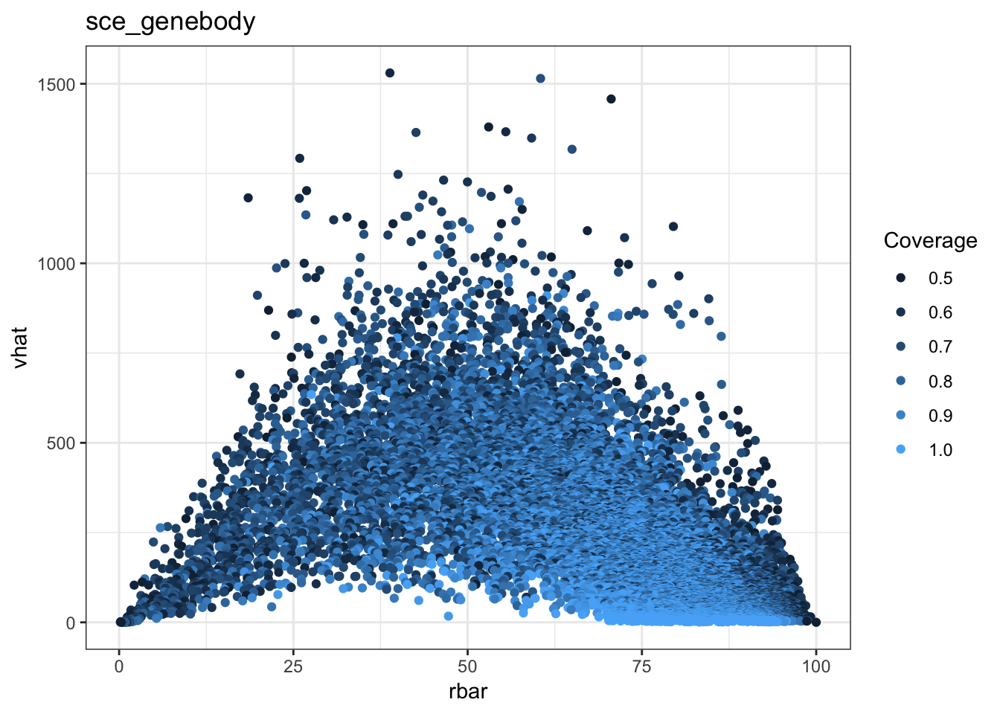
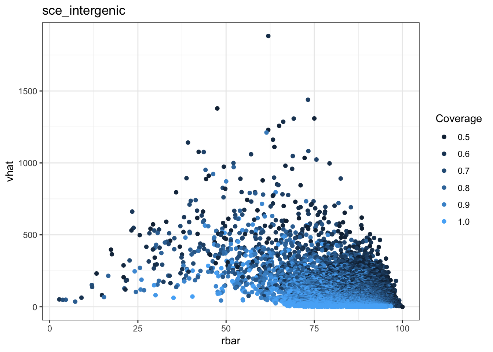
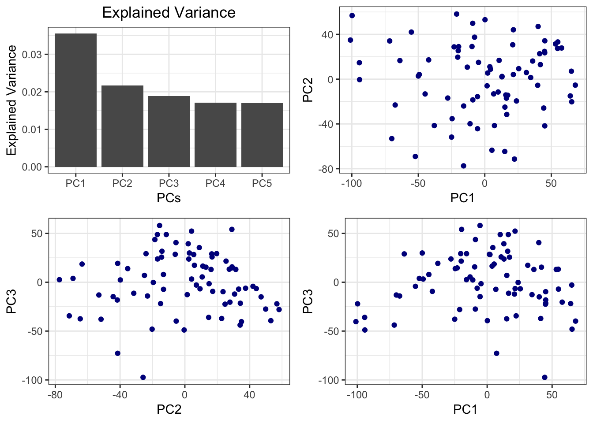
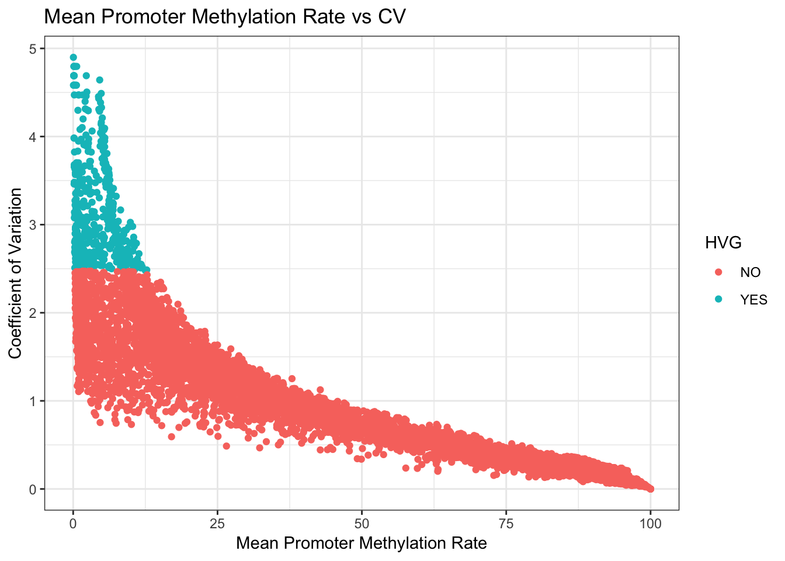
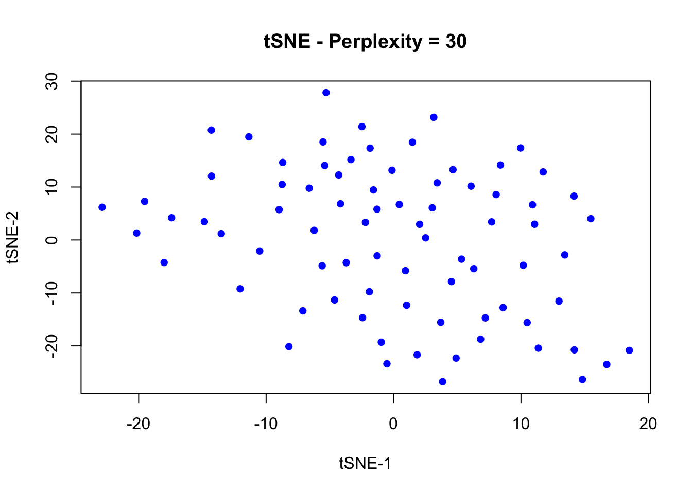
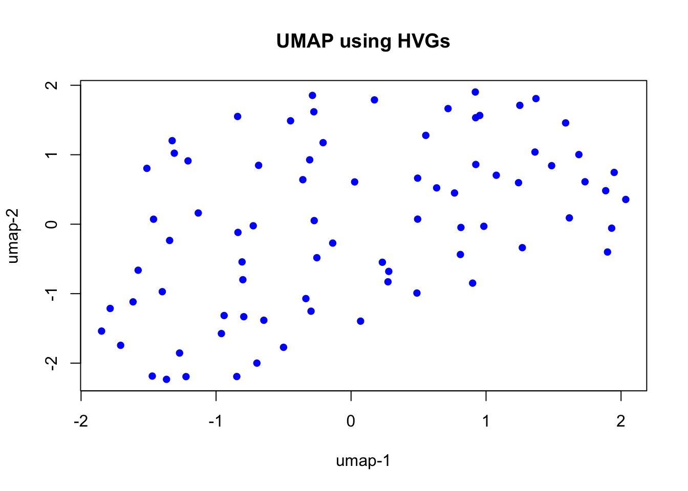
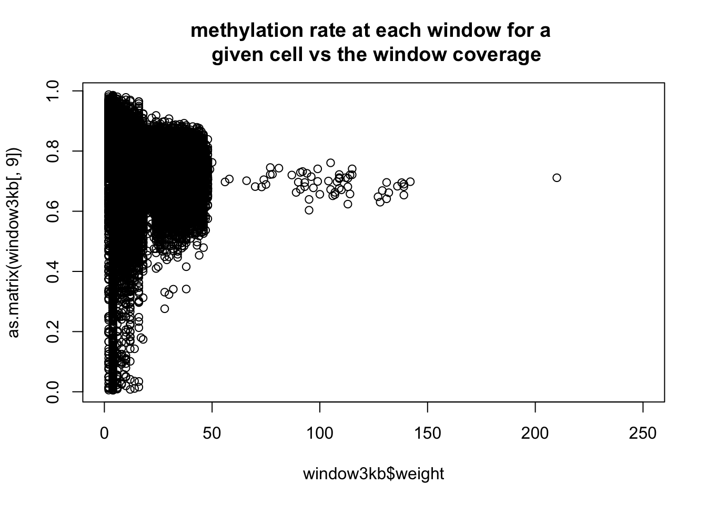
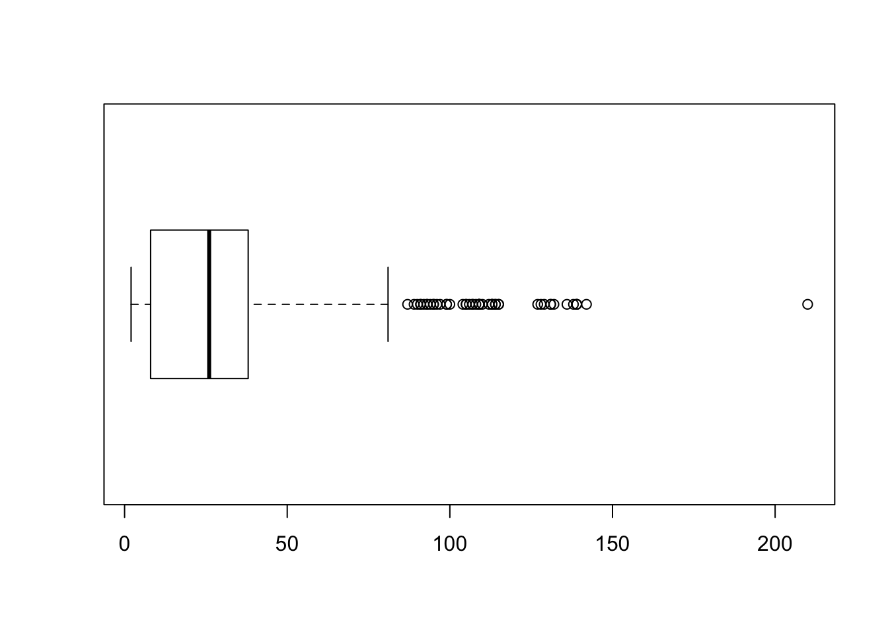
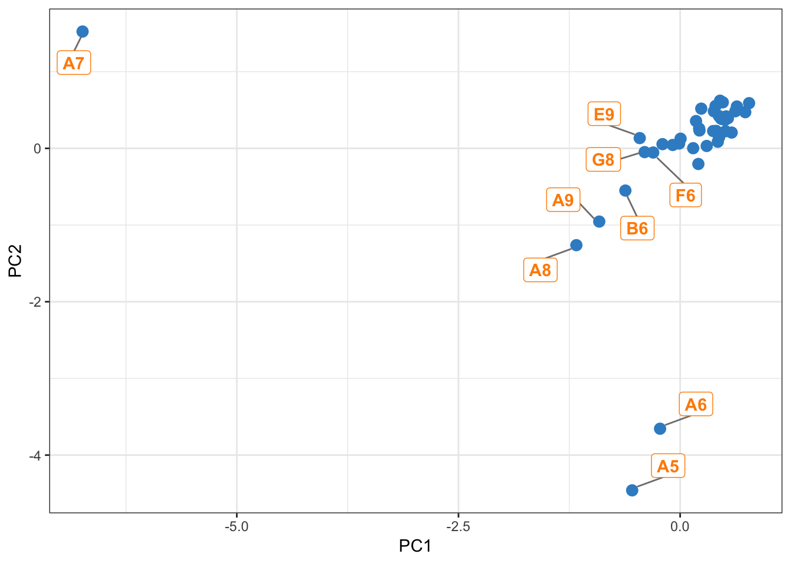

Chapter 2 scBS-seq Data
2.1 Methylation and RNAseq
# load(file.path(io$outdir,save.name))
# system.time({
## user system elapsed
## 4.890 0.830 4.893
## choose sce.rna.scran as default rna sce
## HVGs will be considred based on methylation later
load(file.path(io$RData,'sce.rna.scran.RData'))
rna.sce = sce.rna.scran
## load the methylation data
met = fread(io$met_1bp_out)
annos = unique(met$anno) ## get annotations
## keep only the well number as the sample name
# unique(met$sample)
## the following code is fast but only works if the well names are 2 character long and at the beginning on the string
## if wells such as A12 are present (with 3 or more characters) the function name.cells.by.wells should be called
met$sample = substr(met$sample,0,2)
length(unique(met$sample))## [1] 40## [1] 78## find the common cells in both studies
cell.intersect = Reduce(intersect, list(unique(met$sample), colnames(rna.sce)))
length(cell.intersect)## [1] 40## keep only common cells
met = met[sample %in% cell.intersect]
rna.sce = rna.sce[,colnames(rna.sce) %in% cell.intersect]
## create a data.table of rates and weights where genes are rows and samples are columns for each annotation
# for (i in annos[c(1,4)]){ ## only genebody and promoter for now
# ## create the rate matrix for each annotation
# assign(paste0('met.',i,'.rate'),
# dcast(met[anno==i], id~sample, value.var = 'rate'))
#
# ## create the weight matrix for each annotation
# assign(paste0('met.',i,'.weight'),
# dcast(met[anno==i], id~sample, value.var = 'weight'))
#
# }
## methylation in genebody
met.genebody.rate = dcast(met[anno=='genebody'], id~sample, value.var = 'rate')
rownames(met.genebody.rate) = met.genebody.rate$id
met.genebody.rate$id = NULL
## methylation in promoters
met.prom.rate = dcast(met[anno=='prom'], id~sample, value.var = 'rate')
rownames(met.prom.rate) = met.prom.rate$id
met.prom.rate$id = NULL
## create sce from genebody and promoter methylation data
met.gene.sce = SingleCellExperiment(assays = list(counts = as.matrix(met.genebody.rate)))
met.prom.sce = SingleCellExperiment(assays = list(counts = as.matrix(met.prom.rate)))
# })2.1.1 Filtering NAs
## How many NAs in each gene? Out of 40 cells
metNAs.gene = rowSums(is.na(counts(met.gene.sce)))
metNAs.prom = rowSums(is.na(counts(met.prom.sce)))
hist(metNAs.gene, main = 'histogram of NAs for all genes - gene body', xlab = 'Number of NA cells')
 The promoter methylation data contain much more NAs, as expected.
NA.threshold=20 ## number of cells having NA values
## filter those with number of NAs more than NA.threshold
met.gene.sce.filt_NAs = met.gene.sce[names(metNAs.gene[metNAs.gene<=NA.threshold]),]
met.prom.sce.filt_NAs = met.prom.sce[names(metNAs.prom[metNAs.prom<=NA.threshold]),]
## number of genes/cells in filtered SCEs
dim(met.gene.sce.filt_NAs)## [1] 15930 40## [1] 6364 402.1.2 HVGs in Methylation Data
source('utils/calc.cv.R')
n.met.hvgs = 500
genebody.exp.smry = calc.cv(counts(met.gene.sce.filt_NAs), mean.expr.cutoff = 0, n.hvgs = n.met.hvgs, mean.quant = 0, type = 'Genebody Methylation Rate')
genebody.exp.smry$plot.cv
met.hvgs.gene = rownames(genebody.exp.smry$expr.smry)[1:n.met.hvgs]
prom.exp.smry = calc.cv(counts(met.prom.sce.filt_NAs), mean.expr.cutoff = 0, n.hvgs = n.met.hvgs, mean.quant = 0, type = 'Promoter Methylation Rate')
prom.exp.smry$plot.cv
2.1.3 sPLS - Gene Body
## Warning in cor(A[[k]], variates.A[[k]]): the standard deviation is zero
A negative correlation between RNAseq and Methylation data is apparent, while the opoposite is also true at for some latent variables.
2.1.4 sPLS - Promoter
## Warning in cor(A[[k]], variates.A[[k]]): the standard deviation is zero
There are a lot more NaNs in promoter data than in gene body, which is why there are some data points outside the circles.
2.1.5 Block sPLS
## transcriptome (Y) against gene body and promoter methylation data (X)
block.spls = block.spls(X = list(gene.met = t(counts(met.prom.sce.filt_NAs.hvg)),prom.met = t(counts(met.gene.sce.filt_NAs.hvg))), Y = t(logcounts(rna.sce)), ncomp = 2, keepX = list(gene.met =c(5,50), prom.met =c(5,50)), keepY= c(50,50), mode = "canonical")## Warning in cor(A[[k]], variates.A[[k]]): the standard deviation is zero## Warning in cor(object$blocks[[x]], object$variates[[x]][, c(comp1,
## comp2)], : the standard deviation is zero
2.2 3kb Windows
## user system elapsed
## 25.226 8.459 22.281system.time({
## user system elapsed
## 4.073 2.501 7.482
## create a 'bin' variable
## using 1e5 bins made it too uniform, i.e. meth. rate ~0.75
## sticking with the 3kb window
bin.width =3e3
## I have not differentiated between forward and backward strand, to be checked with Heather
## [Al] also, some windows overlap - this should be considered later on (weighted ovrlapping)
window3kb[,bin:=ceiling(start/bin.width)]
## dropping all columns except for rates and bin
window3kb = window3kb[, grepl('rate', colnames(window3kb))|
grepl('bin', colnames(window3kb)), with=F]
## remove every column name that matches 'var' - rate variance data
window3kb = window3kb[,!grepl('var', colnames(window3kb)), with=F]
dim(window3kb) # 1923673 41
source('utils/name.cells.by.wells.R')
colnames(window3kb) = name.cells.by.wells(colnames(window3kb), pos.in.string = 'first')
## create a 'weight' variable for the number of observations in each bin
## [Al] although, what also matters is the number of times each cell has been covered in total
window3kb = window3kb[,weight:=.N, by = bin]
# user system elapsed
# 22.470 15.497 54.818
## average over bins and disregard NAs- weights will remain the same so not excluded
## bins with no observation for a given cell will return NaNs
window3kb = window3kb[,lapply(.SD,mean, na.rm=TRUE), by=bin]
dim(window3kb) ## 82981 42
window3kb$n.NAs = rowSums(is.na(window3kb))
hist(window3kb$n.NAs, main='histogram of number of NAs in all 3kb windows')
## filter out NAs
window3kb = window3kb[n.NAs<=20] ## arbitrary
dim(window3kb) ## 74171 43
})
## user system elapsed
## 2.507 4.282 8.657## plot a given cell's weight
plot(window3kb$weight, as.matrix(window3kb[,9]), xlim = c(0,250), main= 'methylation rate at each window for a \n given cell vs the window coverage')
## part of variation in methylation is due to dropouts, i.e. low weight
## plot the boxplot of weights
boxplot(window3kb$weight, horizontal=T)
## filtering by weight
## require each window to be covered at least x times
min.weight = 20 ## arbitrary
window3kb = window3kb[weight > min.weight]
dim(window3kb) ## 35431 43 - for min.weight = median## [1] 44564 43system.time({
## user system elapsed
## 24.462 0.207 24.994
# ## add mean meth. rate for each bin:
window3kb[,mean:=apply(.SD,1, mean, na.rm=TRUE ) , by=bin, .SDcols=c(2:41)]
## checking whether there are near zero means for calculating cv
hist(window3kb$mean, main='mean methylation rate for all cells - 3kb windows')
min(window3kb$mean)## 0.5275498
## so we'll calculate cv with no pseudo value at denominator
window3kb[,sd:=apply(.SD,1, sd, na.rm=TRUE) , by=bin,.SDcols=c(2:41)]
window3kb[,cv:=sd/mean]
hist(window3kb$cv)
## order by cv for highly varibale regions
window3kb=window3kb[order(-cv)]
## keep the top variable windows
n.region = 5000
window3kb.hvw=window3kb[1:n.region]
## create SCE
hvw.sce = SingleCellExperiment(assays = list(counts = as.matrix(window3kb.hvw[,c(2:41)])))
})

## user system elapsed
## 29.260 0.552 28.9122.2.1 Dimension Reduction
system.time({
## user system elapsed
## 253.382 31.798 286.293
# pca.met.window = pca(t(counts(hvw.sce)), ncomp = 3)
# save(pca.met.window, file= file.path(io$RData,'pca.met.window.RData'))
load(file.path(io$RData,'pca.met.window.RData'))
})## user system elapsed
## 0.022 0.003 0.029## outliers exist:
source('utils/plot.pca.R')
plot.pca(gg.pca = gg.pca, pca.obj = pca.met.window, top = 'PCA - methylation in variable 3kb windows')
## TableGrob (3 x 2) "arrange": 5 grobs
## z cells name grob
## 1 1 (2-2,1-1) arrange gtable[layout]
## 2 2 (2-2,2-2) arrange gtable[layout]
## 3 3 (3-3,1-1) arrange gtable[layout]
## 4 4 (3-3,2-2) arrange gtable[layout]
## 5 5 (1-1,1-2) arrange text[GRID.text.1062]## find outliers
variates =as.data.frame(pca.met.window$variates$X)
variates.ordered = variates[order((abs(variates$PC1)+abs(variates$PC2)+abs(variates$PC3)), decreasing = T),]
## plot labeled pca to find outliers
ggplot(variates.ordered, aes(x = PC1, y = PC2)) +
geom_point(size = 3, col=color.mixo(1)) +
geom_label_repel(
aes(label = ifelse(rank(PC1)<10,rownames(variates),'')),
col = 'darkorange',
fontface = 'bold',
box.padding = unit(0.35, "lines"),
point.padding = unit(0.5, "lines"),
segment.color = 'grey50'
)
## if filtering necessary
# outlier.cells = c('A7','A5','A6', 'A8', 'A9')
## Were the A row's conditions different? ## Warning in cor(A[[k]], variates.A[[k]]): the standard deviation is zero## the data points for methylation data represents an unbaised bin
plotVar(spls.rna.hvw, legend = T, title = paste0('Correlation Circle Plots - Transcriptome (Y) against Methylation \n of the unbiased ',as.integer(bin.width/1000),' kb windows (X)'), pch= c(16,17), col= color.mixo(c(5,1)))
Negative correlation between RNAseq and Methylation in 3kb window data.